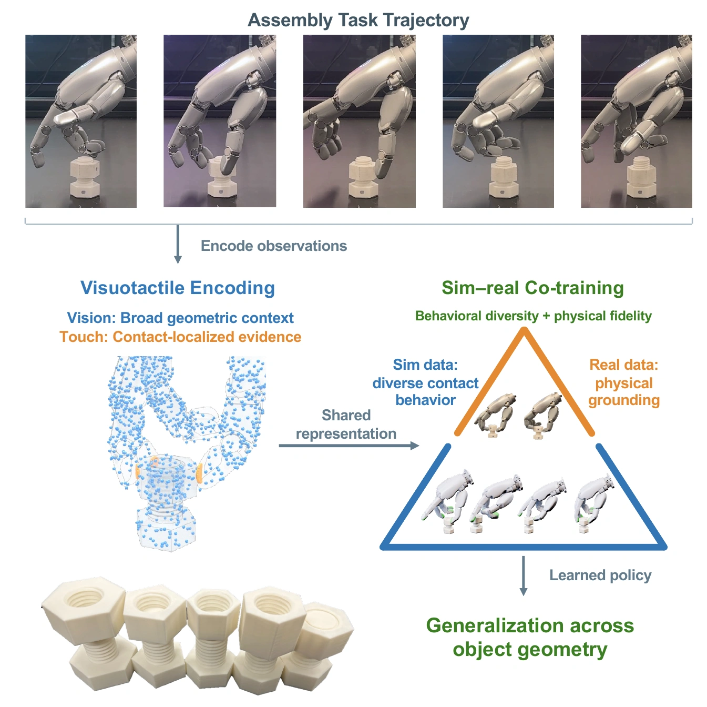
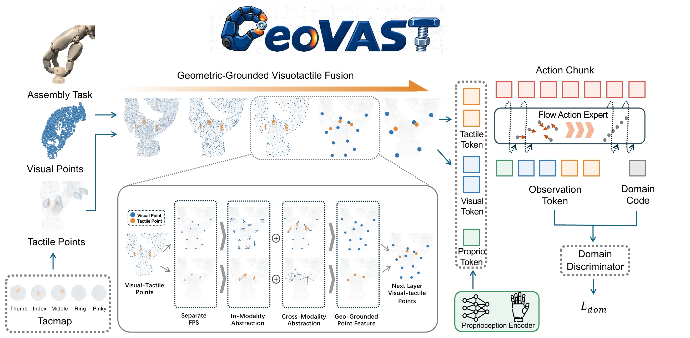
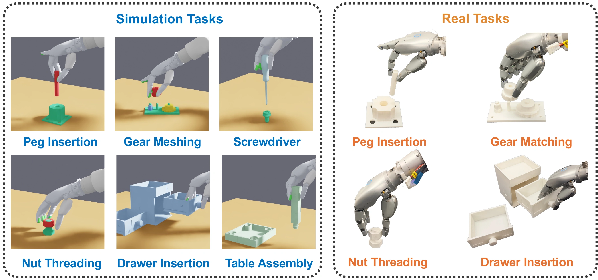
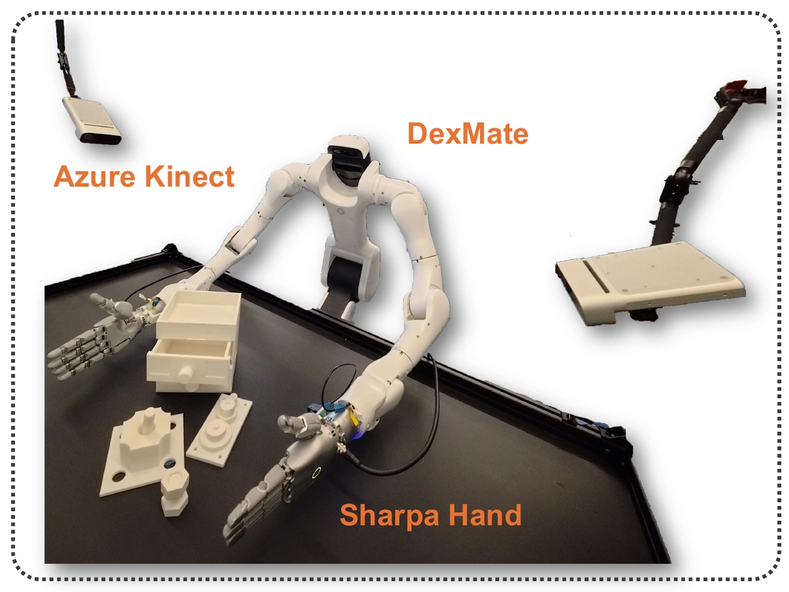

Dexterous assembly with vision and touch
GeoVASTGeometry-Grounded Visuotactile Dexterous Assembly
via Sim-Real Co-Training
TL;DR
GeoVAST grounds vision and touch in a shared 3D space and co-trains on simulated and real demonstrations to learn contact-rich dexterous assembly.
Vision, touch, and shared geometry
Figure 1
Geometry-grounded visuotactile policy
Figure 2
Assembly in simulation and the real world
Figure 4
Real-world setup
Figure 3